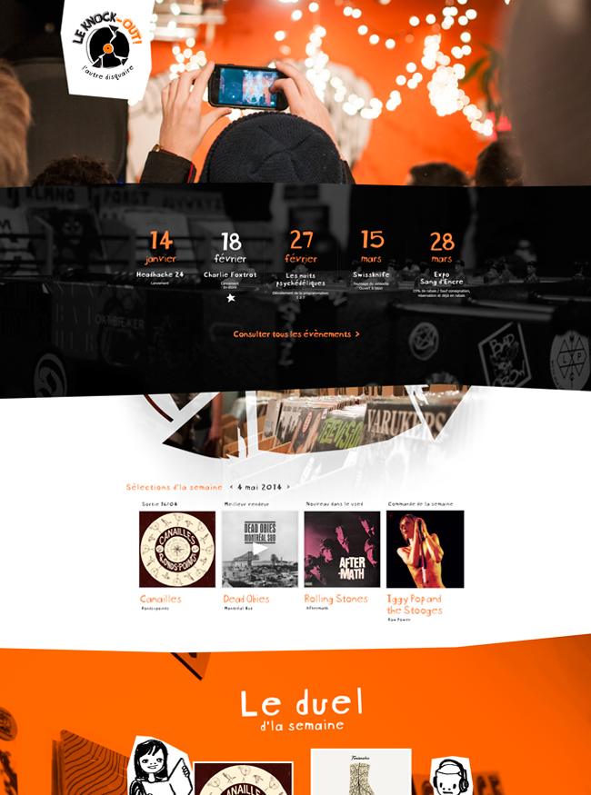
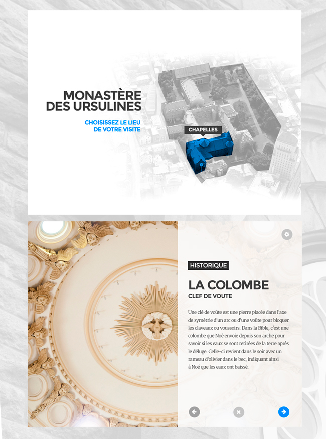
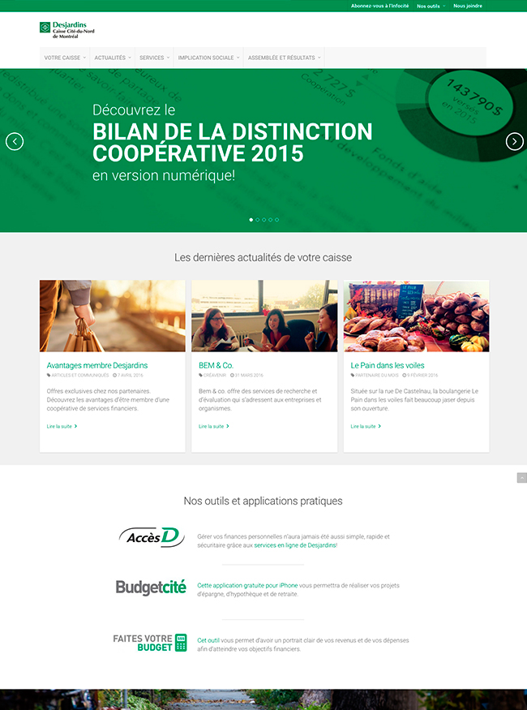

Projets

Le Knock-Out
Objectifs
- Rendre l’agenda des évènements accessibles à tous
- Rendre compte de l’ambiance de la place
Solutions
- Recherche photo aux évènements
- Analyse de la concurrence et du milieu
- Création du visuel
- Balisage sémantique des évènements pour un meilleur référencement
Résultats
- Lorem istor laruem ipsum.
- Lorem istor laruem ipsum.
- Lorem istor laruem ipsum.

Doca du jour
Objectifs
- Lorem istor laruem ipsum.
- Lorem istor laruem ipsum.
- Lorem istor laruem ipsum.
Solutions
- Lorem istor laruem ipsum.
- Lorem istor laruem ipsum.
- Lorem istor laruem ipsum.
Résultats
- Lorem istor laruem ipsum.
- Lorem istor laruem ipsum.
- Lorem istor laruem ipsum.

Modèle 3D du Monastère des Ursulines
Objectifs
- Rendre accessible au public un batiment historique méconnu
- Rendre le visuel du produit actuel plus convivial
- Apporter nos recommandations sur le modèle 3D
Solutions
- Recherche photo pour documenter les différentes sources de lumière
- Analyse de la navigation à travers le modèle
- Prototype fonctionnel du nouveau design à développer
- Tests utilisateurs individuels et en groupe
- Rapport de reccommandations sur l’ensemble des points à améliorer
Résultats
- Meilleure compréhension des enjeux organisationnels et techniques du projettt

Cité-du-Nord
Objectifs
- Concevoir à nouveau responsive
- Migration intégrale des contenu
- Promouvoir la distinction coopérative de la Caisse
Solutions
- Lorem istor laruem ipsum.
- Lorem istor laruem ipsum.
- Lorem istor laruem ipsum.
Résultats
- Lorem istor laruem ipsum.
- Lorem istor laruem ipsum.
- Lorem istor laruem ipsum.
LinkedIn
Ma face, mon curriculum vitæ.Tumblr
Un ramassis photographique.Pinterest
Recherche visuelle.Behance
Ma face, mon curriculum vitæ.C.V.
La version PDF pour les vrais.